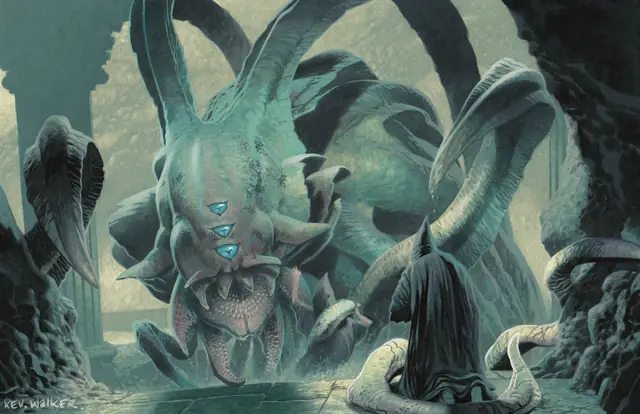

Аболет
Aboleth
Большая Аберрация, Принципиальная Злая

Класс Защиты 17 Инициатива +7 (17)
Хиты 150 (20к10 + 40)
Скорость 10 футов, Плавания 40 футов
| мод | спас | ||
|---|---|---|---|
| СИЛ | 21 | +5 | +5 |
| ЛОВ | 9 | −1 | +3 |
| ТЕЛ | 15 | +2 | +6 |
| мод | спас | ||
|---|---|---|---|
| ИНТ | 18 | +4 | +8 |
| МДР | 15 | +2 | +6 |
| ХАР | 18 | +4 | +4 |
Чувства Тёмное зрение 120 футов, пассивное Восприятие 20
Языки Глубинная речь, Телепатия 120 фт.
Опасность 10 (5 900 опыта или 7 200 опыта в Логове; БВ +4)
Особенности
Амфибия. Аболет может дышать как воздухом, так и под водой.
Потустороннее восстановление. Спустя 5к10 дней после уничтожения тело аболета заново возрождается со всеми Хитами в Дальнем Пределе или другом месте по выбору Мастера.
Легендарное сопротивление (3/день, или 4/день в Логове). Если аболет проваливает Спасбросок, он может вместо этого сделать его успешным.
Облако слизи. Находясь под водой, аболет окружает себя слизью. Спасбросок Телосложения: Сл 14, каждое существо в 5-футовой Эманации, исходящей от аболета в конце его хода. Провал: Цель проклята. На время действия проклятия кожа этого существа становится склизкой, оно может дышать как воздухом, так и под водой, а также может восстанавливать Хиты только будучи под водой.
Проклятое существо получает 6 (1к12) урона Кислотой в конце каждых 10 минут, проведённых вне воды, если его кожу не увлажнить до истечения этого срока.
Зондирующая телепатия. Если существо общается с аболетом при помощи телепатии и аболет видит это существо, он узнаёт самые сокровенные желания этого существа.
Действия
Мультиатака. Аболет совершает две атаки Щупальцем и использует Поглощение воспоминаний или Порабощение разума, если оно доступно.
Щупальце. Бросок рукопашной атаки: +9, досягаемость 15 фт. Попадание: 12 (2к6 + 5) Дробящего урона. Если цель — существо Большого размера или меньше, она становится Схваченной (Сл освобождения от захвата 14) одним из четырёх щупалец.
Поглощение воспоминаний. Спасбросок Интеллекта: Сл 16, одно Очарованное или Схваченное аболетом существо в 30 футах. Провал: 10 (3к6) Психического урона. Успех: Только половина урона. Провал или успех: Аболет получает воспоминания цели, если она — Гуманоид и это действие опустило её Хиты до 0.
Порабощение разума (2/день). Спасбросок Мудрости: Сл 16, одно видимое аболетом существо в 30 футах. Провал: Цель Очарована, пока аболет не умрёт или не окажется на разных с целью планах бытия. Очарованная цель действует как союзник аболета и находится под его контролем, пока остаётся в пределах 60 футов от него. Кроме того, цель и аболет могут телепатически общаться друг с другом на любом расстоянии.
Цель повторяет этот спасбросок каждый раз, когда получает урон, а также спустя каждые 24 часа, проведённые на расстоянии не меньше 1 мили от аболета; при успехе цель оканчивает на себе этот эффект.
Легендарные действия
У этого существа есть 3 использования Легендарных действий (или 4 использования в его Логове); оно может немедленно после окончания хода другого существа потратить одно использование, чтобы совершить одно из следующих действий. Существо восполняет все потраченные использования в начале каждого своего хода.
Бич. Аболет совершает одну атаку Щупальцем.
Психическое истощение. Если хотя бы одно существо Очаровано или Схвачено аболетом, он использует Поглощение воспоминаний и восстанавливает 5 (1к10) Хитов.
Бонус мастерства +4
Среда обитания Подземье, Под водой
Сокровища Реликварные
Аболет
Неподвластный времени инопланетный кукловод
В глубине океанов аболеты видят сны о погибших империях и плетут многовековые интриги. Эти неуловимые бессмертные амфибии физически и ментально подавляют жертв и с помощью отвратительной аберрантной инфекции изменяют их облик, превращая в своих подводных слуг.
Аболеты обладают устрашающим интеллектом и чуждым мышлением. Они прекрасно помнят протомиры и непостижимые империи древнейших эпох мультивселенной, а их секреты — неисчислимы и недоступны для понимания смертными. Аболеты скрываются в местах, полных первозданных тайн: развалинах подводных империй, тайных сосредоточениях магической силы или на тонкой границе между планами бытия.
В этих логовах они мечтают о прошлом, собирают толпы порабощённых ими слуг, поглощают разум невольных жертв и готовятся вернуть свою власть.
Чужеродные цели аболетов и способы их достижения часто остаются загадкой для других существ. Совершите бросок по таблице «Замысел аболета» для вдохновения или выберите сами план аболета.
Замысел аболета
| 1к6 | Аболет пытается... |
| 1 | Реализовать непостижимые планы, действуя, казалось бы, совершенно случайным образом. |
| 2 | Узнать больше о мире, похищая существ и поглощая их разум. |
| 3 | Манипулировать невинными из укромного места, заставляя их с помощью своей телепатии поклоняться ему как богу. |
| 4 | Открыть врата в далёкое прошлое или будущее и начать вторжение из другого времени. |
| 5 | Призвать драконовую черепаху, кракена или другое морское чудовище для затопления прибрежного города. |
| 6 | Обмануть охотников за сокровищами, заставив их вернуть реликвии своей давно павшей империи. |
Логова аболетов
Аболеты обычно обитают в затопленных развалинах и пещерах. В сухих помещениях со свежим воздухом они содержат своих сухопутных слуг? и там же они хранят сокровища, которые могут пострадать от воды.
Местность, в которой находится логово аболета, изменяется из-за его присутствия, что создаёт следующие эффекты:
• Загрязнённая вода. Источники воды в пределах 1 мили от логова сверхъестественным образом становятся загрязнёнными. Когда существа, кроме самого аболета и его союзников, выпивают такую воду, они должны пройти спасбросок Телосложения Сл 15; при провале они Отравлены на 1 час.
• Псионическая проекция. Когда аболет находится в логове, он может творить заклинание Проекция, не нуждаясь в компонентах (заклинательная характеристика — Интеллект, Сл спасброска заклинаний 16). При сотворении заклинания таким образом его дистанция равна 1 миле. Аболет может использовать телепатию в месте, где находится иллюзия, как если бы он сам там находился.
Если аболет умирает или перемещает своё логово в другое место, все эти эффекты мгновенно исчезают.